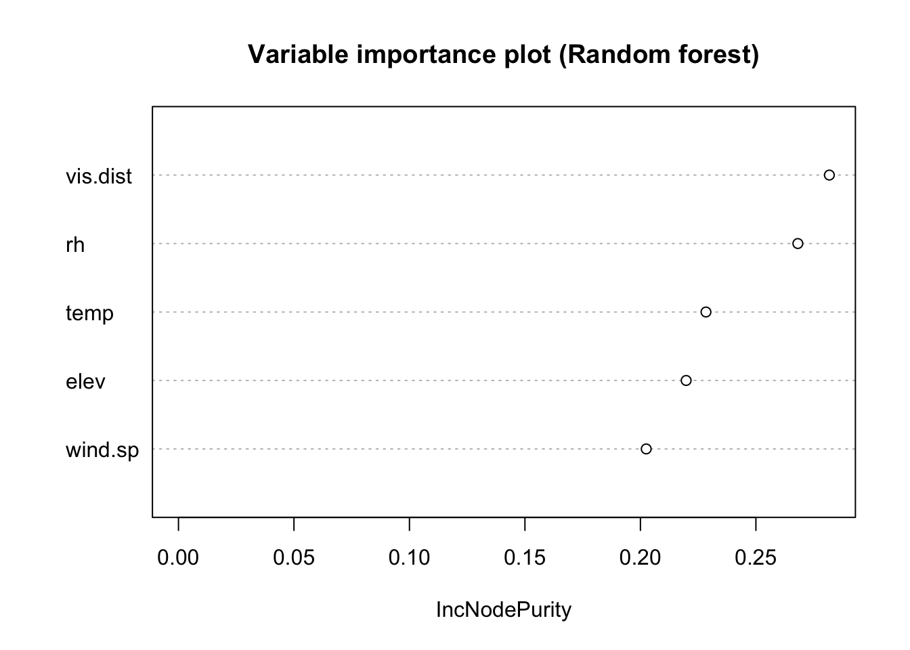

JSC370 Final Project Report
Flight Delays and Climate Near the Arrival Airport
Yunni Qu
April 28, 2023
Introduction
Flight delays can have significant impacts on airlines, passengers, and airport operations, leading to financial losses and inconvenience for travelers. Understanding the causes of flight delays and their relationship with climate conditions can help airlines and passengers avoid the potential negative effect. We will focus on airports located in the United States and the climate near these airports.
IATA code refers to the three-letter code assigned by the International Air Transport Association (IATA) to airports, airlines, and other aviation organizations. The IATA code is used to standardize and simplify air travel communications, such as flight itineraries, baggage tags, and ticketing. For airports, the IATA code usually consists of three letters that identify a specific airport. For example, JFK is the IATA code for John F. Kennedy International Airport in New York City. Here, we will use the IATA code to uniquely identify airports and join different data sets.
The Bureau of Transportation Statistics (BTS) is a United States federal agency that is responsible for collecting, analyzing, and disseminating information on all modes of transportation in the United States. The agency was established in 1992 and is a part of the Department of Transportation. The primary goal of the BTS is to provide accurate and reliable data on transportation systems to support policy-making, research, and decision-making by government agencies, businesses, and the public. The agency collects and analyzes data on a wide range of transportation topics; we will mainly be using the data set that includes information on the number of delayed and cancelled flights, the airlines involved, the causes of delays, the length of delays, the departing airport, and the IATA code of the airport.
The “OurAirports” project is an open-source initiative that provides detailed information on airports around the world. The project was launched in 2007 and is maintained by a community of volunteers who collect and verify data on airports from a variety of sources. The goal of the project is to provide accurate and up-to-date information on airports that can be used by a wide range of stakeholders, including aviation professionals, researchers, and travelers. The data provided by the project includes information on airport locations, runways, facilities, and services, as well as details on the number of flights and passengers at each airport. We will be using the part of data set includes airports in the United States with the IATA code, the location, longitude, and latitude.
Additionally, we will work with the meteorological data presented in lecture consisting of weather station readings in the continental US. We will primarily be looking at the temperature, elevation, wind speed, visibility distance, atmospheric pressure, relative humidity, latitude, and longitude in this data set.
In this project, we aim to provide valuable insights into the question: “What are the factor that contribute to weather flight delays?”
Methods
Data Collection
The flight delay data were taken from The Bureau of Transportation Statistics website. Under where it says Airline On-Time Statistics and Delay Causes, there is a query to select the data. We took the data for all carriers and all airlines form November 2017 to November 2022. The airport locations data were downloaded from Ourairports project website.
Data Cleaning and Wrangling
In this part, we will discuss the data cleaning, filtering, and joining performed on the data sets. We first cleaned the three datasets separately, and then joined them to make the complete cleaned data for our analysis.
There wasn’t any concerns with the range of the data when we looking at the summary of the variables. There are 4 columns of interests that contains “NAs”, so we will be removing these rows with missing values. These columns included “arr_flights”, “arr_cancelled”, “arr_del15”, “arr_delay”. By removing these rows, we were able to ensure that our analysis was based on complete data.
We noticed that the “latitude_deg” and “longitude_deg” columns were stored as character strings. To perform any geographical analysis, we needed these columns to be numeric. To convert these columns, we convert the values from character to numeric data type. By doing this, we were able to ensure that our analysis was based on complete and relevant data.To gain a better understanding of the data set, we used the summarized the columns of interests to generate descriptive statistics for several variables in the data set. These variables included “latitude_deg”, “longitude_deg”, region_name, and “iata_code”. The “latitude_deg” and “longitude_deg” variables represented the latitude and longitude coordinates of the airports, while the other variables were related to airport codes and regions.After cleaning the data, we filtered the data set to remove rows with missing values in the columns of interests.By removing these rows, we were able to ensure that our analysis was based on complete and relevant data.
We first summarized the ‘met’ data set to generate descriptive statistics for variables of interest. These variables include: “temp”, “elev”, “wind.sp”, “vis.dist”, “rh”. After examine the maximum and minimum of these variables, we found some usual values. These include the temperature of -40 and elevation of 9999. We replaced these values were with “NA”. Then, the met_subset variable is created by selecting only certain columns of interest from the ‘met’ data set: latitude, longitude, temperature, elevation, wind speed, visibility distance, atmospheric pressure, and relative humidity. Since there is only information for year and month in the flight delay data set, we will take the mean for the columns of interest in met_subset for each weather station. We expect larger airports to have more flights delays since there are more flights in larger airports. To more closely focus on the effect of weather on flight delays, we calculate a new column for the proportion of delays caused by weather. This is calculated by dividing the the number of weather delay by number of arrival delay for each airport.
The Haversine formula is a mathematical formula used to calculate the shortest distance between two points on the surface of a sphere, such as the Earth. It is commonly used in navigation and geography to calculate distances between two points specified by their latitude and longitude coordinates. The formula takes into account the curvature of the Earth’s surface and calculates the shortest distance between two points along the surface of a sphere. It works by first converting the latitude and longitude coordinates of the two points into radians, and then using the difference between the latitudes and longitudes to calculate the angular distance between the two points. This angular distance is then used to calculate the great circle distance between the two points using the Haversine formula. We will use the Haversine formula to find the closest weather station to each airport.
The two data frames delay_subset and airports were merged based on a common column IATA code. The merged data frame is then grouped by airport, and summary statistics are calculated for each airport, such as the total number of arriving flights, the number of cancelled flights, the number of delayed flights, and the total delay time. The longitude and latitude coordinates for each airport are also kept, as well as the name of the airport’s region. The resulting data frame contains one row per airport, with columns for each of the calculated summary statistics.
The resulting data frame is merged with the “met_subset” data frame to create a Cartesian product of the two data frames. Then, the distance is calculated between the airport and weather station locations using the Haversine formula. The resulting data frame is again grouped by the “airport” column and the row with the minimum distance is selected for each group. The final output data frame contains information on the airport, its closest weather station, delay statistics, and airport location information. This data set will hopefully provides valuable insights into the relationship between airport delays and weather patterns. Table 1 shows a subset of our dataset.
| airport | arr_delayed | arr_cancelled | weather_prop | region_name | elev | wind.sp | vis.dist | rh |
|---|---|---|---|---|---|---|---|---|
| ABE | 74 | 9 | 0.122 | Pennsylvania | 117.003 | 2.248 | 14432.14 | 70.364 |
| ABI | 37 | 4 | 0.007 | Texas | 546.000 | 4.690 | 15979.66 | 49.096 |
| ABQ | 409 | 15 | 0.029 | NewMexico | 1619.793 | 3.517 | 16031.68 | 38.117 |
| ABR | 7 | 0 | 0.000 | SouthDakota | 396.448 | 3.551 | 14066.22 | 77.158 |
| ABY | 18 | 1 | 0.200 | Georgia | 59.000 | 2.004 | 14139.52 | 77.747 |
| ACK | 89 | 9 | 0.029 | Massachusetts | 21.000 | 2.649 | 13292.73 | 83.958 |
Data Exploration
Now let’s explore our cleaned dataset.
Distribution of Arrivel Flights Cancelled in the US in August 2019
Figure 1 shows the number of flights on the y-axis and the number of cancelled flights on the x-axis. The shape of the histogram is right skewed, indicating that most airports have less flights cancelled, while fewer airports have a large number of cancelled flight.
Distribution of Arrivel Flights Delayed in the US in August 2019
Figure 2 shows the number of flights on the y-axis and the number of delayed flights on the x-axis. The shape of the histogram is right skewed, indicating that most airports experience less flight delays, while fewer airports have a large number of delayed flight.
Proportion of Weather Delays in the US in August 2019
Figure 3 shows the number of flights on the y-axis and the number of delayed flights cause by weather on the x-axis. The shape of the histogram is right skewed, indicating that most airports experience less weather flight delays, while fewer airports have a large number of weather delayed flights.
Modeling
In order to find the relationship between different weather condition indicators and the proportion of flight delays, we will use linear model and random forest model. We will fit linear regression models to the data, with the proportion of weather delayed flights as the response variable and the other variables as predictor variables. The linear regression models will provide estimates of the effects of each predictor variable on the proportion of weather delayed flights. We will also be traning a random forest model which will help us model the non-linear relationship if it exist.
Results
Data Summary
Now we will summarize and group flight data by region, calculating the proportion of weather delayed flights and delayed flights for each region.
| State | proportion of weather delayed flights | mean wind speed | mean visability distance |
|---|---|---|---|
| Alabama | 0.132 | 2.172 | 14170.89 |
| Alaska | 0.016 | 1.882 | 14266.22 |
| Arizona | 0.011 | 3.104 | 16001.59 |
| Arkansas | 0.064 | 2.468 | 14784.27 |
| California | 0.056 | 2.834 | 14570.89 |
| Colorado | 0.040 | 3.382 | 15915.58 |
| Connecticut | 0.036 | 2.606 | 14734.30 |
| DistrictofColumbia | 0.054 | 3.297 | 15844.21 |
| Florida | 0.074 | 2.848 | 14828.20 |
| Georgia | 0.181 | 2.407 | 14376.92 |
| Hawaii | 0.004 | 2.647 | 10101.02 |
| Idaho | 0.015 | 3.817 | 16037.53 |
| Illinois | 0.098 | 2.884 | 14689.83 |
| Indiana | 0.066 | 2.913 | 14698.32 |
| Iowa | 0.134 | 2.991 | 14087.31 |
| Kansas | 0.064 | 4.303 | 14969.64 |
| Kentucky | 0.073 | 2.691 | 14696.33 |
| Louisiana | 0.084 | 2.014 | 14261.64 |
| Maine | 0.071 | 2.602 | 13477.71 |
| Maryland | 0.121 | 2.498 | 14448.25 |
| Massachusetts | 0.083 | 3.356 | 13506.22 |
| Michigan | 0.060 | 2.738 | 14631.14 |
| Minnesota | 0.049 | 2.455 | 14989.59 |
| Mississippi | 0.141 | 1.810 | 13465.15 |
| Missouri | 0.053 | 2.811 | 14597.20 |
| Montana | 0.030 | 2.759 | 15880.64 |
| Nebraska | 0.129 | 3.647 | 14491.03 |
| Nevada | 0.028 | 2.759 | 16073.53 |
| NewHampshire | 0.086 | 2.138 | 13296.51 |
| NewJersey | 0.036 | 2.786 | 14392.81 |
| NewMexico | 0.047 | 3.879 | 15954.37 |
| NewYork | 0.069 | 2.888 | 14813.57 |
| NorthCarolina | 0.086 | 2.226 | 14292.53 |
| NorthDakota | 0.030 | 3.903 | 15275.52 |
| Ohio | 0.061 | 3.070 | 14728.25 |
| Oklahoma | 0.148 | 3.949 | 15113.70 |
| Oregon | 0.008 | 2.047 | 14774.22 |
| Pennsylvania | 0.113 | 2.304 | 14357.65 |
| RhodeIsland | 0.090 | 3.236 | 14743.51 |
| SouthCarolina | 0.120 | 2.216 | 14270.44 |
| SouthDakota | 0.053 | 3.793 | 14653.43 |
| Tennessee | 0.093 | 1.965 | 15033.98 |
| Texas | 0.044 | 4.064 | 15722.62 |
| Utah | 0.022 | 3.016 | 15993.40 |
| Vermont | 0.055 | 2.735 | 15442.77 |
| Virginia | 0.078 | 2.282 | 14719.31 |
| Washington | 0.008 | 1.267 | 15119.59 |
| WestVirginia | 0.139 | 1.509 | 13596.59 |
| Wisconsin | 0.068 | 2.456 | 14634.24 |
| Wyoming | 0.019 | 3.902 | 15709.50 |
The table above shows the mean proportion of delayed flights because of the weather for each state in the US. We see that the statistics significantly differs by state. For Alaska, the proportion of weather delayed flights was 0.132 and . This number is significantly lower for Arizona, which have a weather flight delay proportion of 0.011. In this table, we see that the proportion of wather delayed flights varies by geographic region.
Linear Model
Realationship between Wind Speed and Proportion of Weather Flight Delays
Figure 4 shows the relationship between wind speed near the airport and proportion of flight delayed cause by weather in the airport. The horizontal axis (X-axis) represents the wind speed and the vertical axis (Y-axis) represents the proportion of flight delay, measured as a proportion from 0 to 1. The point are colored by temperature. Each point on the scatter plot represents a specific airport, with the wind speed and proportion of flight delay for that point plotted as a coordinate. We see a generally downward trend with the two variables. As wind speed increases, the proportion of flight delay decreases. There are no outliers or unusual observations.
Table 3 is the summary for this linear model of wind speed near the airport and proportion of flight delayed. The intercept coefficient of 0.0913 represents the estimated value of y when wind speed is 0. The coefficient for wind speed is -0.0094, indicating that for every unit increase in wind speed, the estimated value of y decreases by 0.0094. Therefore, there is a negative relationship between wind speed and proportion of weather delayed flights, meaning that as wind speed increases, the value of proportion of weather delayed flights tends to decrease.
Relationship between Visibility Distance and Proportion of Flight Delayed
Figure 5 shows the relationship between visibility distance near the airport and proportion of flight delayed in the airport. The horizontal axis (X-axis) represents the visibility distance and the vertical axis (Y-axis) represents the proportion of flight delay.Each point on the scatter plot represents a specific airport. We see downward trend the two variables. As visibility distance increases, the proportion of flight delay decreases.
Table 4 is the summary for the linear model of visibility distance near the airport and proportion of flight delayed. The intercept coefficient of 0.2570 represents the estimated value of y when visibility distance is 0. The coefficient for visibility distance is really small, because of the huge difference in the values of visibility distance and proportion of delayed flights. However, looking at the P-value, visibility distance is a good predictor for proportion of delayed flights. There is a negative relationship between visibility distance and proportion of weather delayed flights, meaning that as visibility distance increases, the value of proportion of weather delayed flights tends to decrease.

Relationship between Relative Humidity and Proportion of Flight Delayed
Figure 6 shows the relationship between relative humidity near the airport and proportion of flight delayed in the airport. The horizontal axis (X-axis) represents the Relative Humidity and the vertical axis (Y-axis) represents the proportion of flight delay.Each point on the scatter plot represents a specific airport. We see an upward trend the two variables. As Relative Humidity increases, the proportion of flight delay also increases.
Table 5 is the summary for the linear model of relative humidity near the airport and proportion of flight delayed. The intercept coefficient of 0.0913 represents the estimated value of y when wind speed is 0. The coefficient for wind speed is -0.0094, indicating that for every unit increase in wind speed, the estimated value of y decreases by 0.0094. Therefore, there is a negative relationship between wind speed and proportion of weather delayed flights, meaning that as wind speed increases, the value of proportion of weather delayed flights tends to decrease.
Random Forest
This scatter plot shows the relationship between proportion of cancelled flight and proportion of delayed flight in the airport. The horizontal axis (X-axis) represents the proportion of cancelled flight and the vertical axis (Y-axis) represents the proportion of delayed flights, measured as a proportion from 0 to 1. We see a strong positive relationship between the 2 variables.

| mse | median_y | mean_y |
|---|---|---|
| 0.0034523 | 0.048 | 0.075 |
Conclusion and Summary
In this report, we hope to answer the question “What factors contribute to flight delays caused by weather?”. From our summary of the data, we found that the proportion of delayed flights cause by weather differs by geographic location. Using linear model we found that visibility distance and wind speed have a negative relationship with proportion of weather delays, whereas relative humidity have a positive relation ship with it. Next, we further investigate this relationship with random forest models, which can model non-linear relationship. With this model, we found that the top 3 factors contributing to the proportion of delayed flights are visibility distance, relative humidity and wind speed.
Limitations
There are several limitations to this project. First, the amount of data we are able to use is small. The flight delay data we have is summed for each day not every hour. Since weather conditions can change relatively fast, daily summaries might not be enough information. Another limitation is the model we used, although random forest is powerful for regression task, it’s difficult to interpret. We weren’t able to see in which direction each variable contributed to the result.